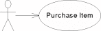

|
[Example UML Use Case]

[Example UML Activity]

|
An usage scenario consists of i) a workload to model the frequency of user interactions and ii) a scenario behaviour to model the steps of service invocations by users. In this example, the workload is a closed workload (upper right corner of Figure 3.33) and specifies that 100 users (population) execute the scenario behaviour. Each user executes the actions specified in the behaviour from the start action to the end action. After reaching the end action, the user reenters the behaviour at the start action after 5 seconds (think time). The number of users in the system is fixed to 100 in this scenario.
The actions inside the behaviour either model flow constructs (start, stop, branch, loop) or user invocations of services available in system provided roles (Login, Search, Browse, BuyItem, Logout) (also see Section 3.3.6). Like in the UML diagrams before, users first log in to the online shop and then either search directly for an item via a search interface or browse the shop's catalog to find an item to buy. This alternative is modelled with a branch action and the probabilities of search and browsing are specified as 40% and 60% respectively. Browsing the catalog is modelled as a loop with three iterations, as it is assumed that users need three clicks to find the item they want to buy. After browsing or searching is finished, the user continues with buying the selected item, and finally the logging out from the shop.
Note, that usage models are completely decoupled from the inner contents of a system (see Section 3.3.5), which consists of an assembly (see Section 3.3.2) and a connected resource environment (see Section 3.4.4). The usage model only refers to services of system provided roles. It regards the component architecture (i.e., the assembly) as well as used resources (i.e., hardware devices such as CPUs and harddisks or software entities such as threads, semaphores) as hidden in the system. Thus, the usage model only captures information that is available to domain experts and can be changed by them. Resource environment and component architecture may be changed independently from the usage model by system architects, if the system provided roles remain unchanged.